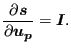
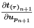
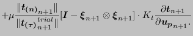

Next: Materials Up: Face-to-Face Penalty Contact Previous: Normal contact stiffness Contents
Due to the assumption that the projection of the slave integration point on the master surface does not change during and increment, and that the local normal on the master surface does not change either, the equations derived in the section on node-to-face contact simplity to:
 |
(274) |
where
|  | (275) |
Equation (248) now reduces to
|  | ![$\displaystyle = \mu \boldsymbol{\xi }_{n+1} \otimes \left [ -\boldsymbol{n} \cd...
...c{\partial \boldsymbol{t_{(n)}}_{n+1}}{\partial \boldsymbol{u_p}_{n+1}} \right]$](img1015.png) |
|
|  | (276) |
Be careful to distinguish and , which are tractions, from , which is a tangential differential displacement.